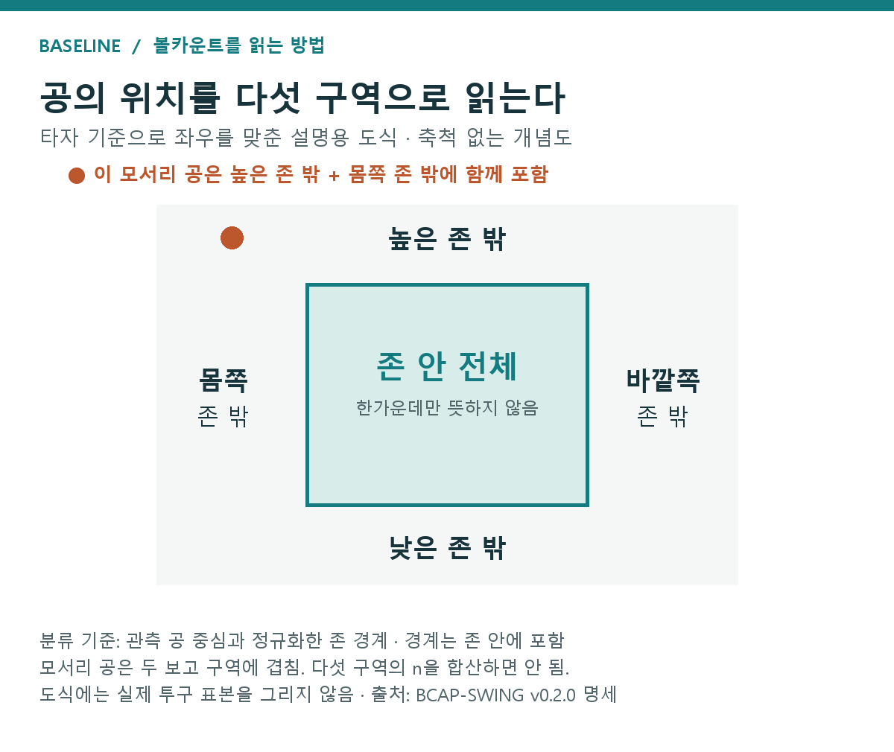

BCAP 설명서 — 결과부터 읽는 카운트별 행동 비교
이 글의 목차 — 결과·방법·해석
- 1. 결과 — 위치·타자 행동·구종을 한눈에 보기
- 위치부터 확인하기
- 타자 행동으로 질문을 옮기기
- 두 구종 분류에서 반복되는 방향을 찾기
- 다른 연도 확인의 범위
- 2. 이 결과는 무엇을 뜻하나 — 가능한 설명과 확인한 원인은 다르다
- 위치 결과의 해석 — 볼의 비용과 타자의 반응이 함께 작용할 수 있다
- 타자 결과의 해석 — 위치에 따라 두 선택이 남기는 기회가 다르다
- 구종 결과의 해석 — 넓은 구종 묶음의 평균으로 우열을 정하지 못했다
- 3. 비교의 정의 — BCAI는 상태, BCAP는 행동
- 4. 위치의 정의 — S·B는 실제 도착 위치
- 5. 숫자의 뜻 — W는 최종 타석의 가중 공격가치
- 표에 들어가는 숫자는 어떻게 읽을까?
- 6. 계산 방법 — 선수·상황을 맞춰 두 행동 비교하기
- 1단계: 같은 선수·상황 목록에 두 선택을 올려놓기
- 2단계: 결과 예측과 행동 선택 확률을 따로 만들기
- 3단계: 예측과 실제 기록 사이의 차이를 반영하기
- 4단계: 평가할 경기의 결과를 먼저 보지 않기
- 비교하는 선택에 따라 쓸 수 있는 정보도 달라진다
- 7. 비교의 조건 — 자료 부족과 차이 불명확 구별하기
- 공이 많다는 것과 비교가 충분하다는 것은 다르다
- 8. 개발 과정을 더 읽고 싶다면
- 9. 결과를 사용할 때 기억할 범위
- 이 글의 용어 메모
BCAP의 핵심 결과는 세 가지다. 0-2·1-2의 투수 위치 비교에서는 존 밖 방향이 남았고, 타자는 비교 가능한 대부분의 존 안에서 스윙·존 밖에서 테이크 방향이었다. 구종은 일반적인 우열을 확정하지 못했다. 아래에서는 그 결과를 먼저 모아 보여주고, 이후 어떻게 계산했고 어디까지 해석할 수 있는지 설명한다.
BCAP는 같은 카운트에서 선수·상황 차이를 보정해, 위치·구종·스윙 여부에 따른 최종 타석 결과를 비교하는 자체 모형이다. 결과를 재는 W는 볼넷·안타·장타 등에 가중치를 붙인 공격가치다. 타자는 높은 W, 투수는 낮은 허용 W가 좋은 방향이다.
읽는 순서: 결과 요약 → 결과표·그림 → 계산 방법 → 이유와 해석 범위. 청록색은 자체 분석 결과, 보라색은 참고문헌, 갈색은 해석 메모다. 큰 제목은 주제, 작은 제목은 그 안의 설명 단계다.
1. 결과 — 위치·타자 행동·구종을 한눈에 보기
| 결과 묶음 | 핵심 결과 | 불명확·보류한 부분 |
|---|---|---|
| 투수 위치 · 2024·2025 | 0-2·1-2는 존 밖, 나머지 9카운트는 존 안의 허용 W가 낮음 | 0-1은 불명확. 2023년은 핵심 두 카운트의 존 밖 방향 재현 |
| 타자 행동 · 2023 | 존 안 10카운트는 스윙, 비교 가능한 존 밖 44칸은 테이크 쪽 W가 높음 | 존 안 3-0·3-1은 불명확. 존 밖 3-0 네 칸은 자료 부족 |
| 구종 · 2023·2026 | 96개 보고 비교 중 92개가 불명확 | 현재 결과로 일반적인 최적 구종·배합을 정하지 않음 |
요약표. 기존 저장 결과의 방향을 정리했다. 2026년 자료는 9월 7일까지이며 위치 비교는 보류했다. W는 최종 타석의 가중 공격가치다. 정확한 값·표본·구간과 출처는 바로 아래 결과 절에 있다.
1.1위치부터 확인하기
0-2·1-2에서는 실제 존 밖 투구의 허용 공격가치가 낮았고, 이 방향은 2023년에도 남았다. BCAP 위치 비교는 같은 카운트에서 선수·상황 차이를 보정해 실제 존 안과 밖의 최종 타석 W를 비교한 것이다.
개발자료인 2024~2025에서 S/B는 0-2·1-2가 존 밖 방향, 0-1은 불명확, 나머지 아홉 카운트는 존 안 방향이었다. 2023에서도 핵심 두 카운트의 존 밖 방향이 반복됐다. 표 1의 구간 전체가 기존 설계의 차이 크기 참고선인 0.01 W를 넘었다. 이 참고선은 별도로 정한 분석 기준이며 자동으로 실전 이득을 뜻하지 않는다.
아래는 실제 저장 결과다. Q(B)는 비교 기준을 맞춘 존 밖 투구의 가치, Q(S)는 존 안 투구의 가치다.
| 자료·카운트 | 존 밖 Q(B) | 존 안 Q(S) | 차이 S−B | 보정 구간 |
|---|---|---|---|---|
| 2024~2025 · 0-2 | 0.1937 | 0.2216 | +0.0278 | +0.0152~+0.0404 |
| 2024~2025 · 1-2 | 0.2185 | 0.2399 | +0.0214 | +0.0110~+0.0318 |
| 2023 · 0-2 | 0.1965 | 0.2308 | +0.0343 | +0.0223~+0.0462 |
| 2023 · 1-2 | 0.2187 | 0.2428 | +0.0241 | +0.0140~+0.0342 |
표 1. 핵심 위치 비교. MLB 정규시즌, 단위 W. 개발자료는 4,859경기, 2023은 2,430경기다. 비교 투구/해당 카운트 적격 투구는 위에서부터 95,563/96,411, 138,265/139,503, 47,912/48,733, 68,412/69,569다. 투구 수는 고유 타석 수와 다르다. 구간은 고정 점수의 경기 군집 변동을 반영한 명목 95% 구간이며 개발은 219개, 2023 핵심 비교는 사전에 정한 주요 4개 비교를 보정했다. 출처: 기존 결과 재표시표.
예를 들어 개발자료 1-2에서는 0.2399−0.2185가 약 +0.0214 W다. 존 밖 쪽의 허용 가치가 그만큼 낮았다는 뜻이다.
1.2타자 행동으로 질문을 옮기기
2023년에는 존 안 12카운트 중 10개가 스윙 방향, 존 밖은 비교 가능한 44개 칸 모두 테이크 방향이었다.
타자 비교는 개발자료의 존 안 열두 카운트에서 모두 스윙 쪽 점추정이 나왔지만, 3-0은 불명확했다. 2023에도 열두 카운트 모두 같은 점추정 방향이었고, 그중 열 카운트는 보정 구간도 스윙 방향이었다. 3-0과 3-1은 불명확했다.
2023 존 밖에서는 48개 보고 칸 중 지원 기준을 통과한 44개가 모두 테이크 방향이었고 구간도 같은 방향이었다. 남은 네 칸은 3-0의 자료 부족이다. 모서리의 공이 보고 구역에 겹치므로 이 칸들을 서로 독립적인 실험처럼 세지는 않는다.

그림 1. MLB 2023 정규시즌의 카운트×5구역 스윙−테이크 비교. 단위 W, 12×5=60개 보고 칸. 표본은 각 칸의 지원 기준을 통과한 투구이며 모서리 투구는 보고 구역에 겹친다. 세부 투구 수·유효 표본·보정 구간은 원 결과표에 있다. 관측 위치를 조건으로 한 평균 비교이며 개별 공의 스윙 지시가 아니다.
1.3두 구종 분류에서 반복되는 방향을 찾기
구종은 외부 연도의 96개 보고 비교 중 92개가 불명확해, 카운트별 일반적인 우열을 정하지 못했다.
구종 비교에서는 일반적인 우열을 찾기 어려웠다. 2023·2026, 두 구종 분류, 각 분류 자체의 비교 가능 표본과 두 분류가 함께 가능한 표본을 합친 96개 보고 비교 중 92개가 불명확했다. 3-2의 비포심 방향 단서는 외부 두 연도에서도 점추정으로 남았지만 구간으로 확정하지 못했다. FB/NFB 3-0에 남은 차이도 드문 행동의 지원과 보정 방식에 대한 의존성이 있어 일반적인 배합 지침으로 넓히지 않았다. 결과의 상세 근거
| 자료 | 수행한 비교 | 읽을 때의 범위 |
|---|---|---|
| 2024~2025 | 위치·타자·두 구종 비교 | 패턴을 발견하고 모형을 만든 개발자료 |
| 2023 | 네 비교의 외부 패턴 재현 | 과거 연도에서 같은 절차로 확인 |
| 2026년 9월 7일까지 | 두 구종 비교 | S/B·타자는 측정 정합성 미확보로 보류 |
표 2. 현재 자료와 수행 범위. 기간별 결과를 하나의 검증 결과로 합치지 않았다. 표본 수는 모듈·카운트·지원 조건별로 달라 최종 결과표에 따로 기록했다.
1.4다른 연도 확인의 범위
2023년의 위치·스윙과 2023·2026년의 구종을 확인했고, 2026년 위치·스윙은 측정 기준 문제로 보류했다. BCAP는 정한 절차를 유지하면서 각 외부 연도 안에서 보조 모형을 다시 학습했다. 완전히 처음 보는 자료에서 고정 예측모형을 시험한 것으로 읽지 않는다.
2. 이 결과는 무엇을 뜻하나 — 가능한 설명과 확인한 원인은 다르다
결과의 방향은 확인했지만, 그 차이가 생긴 원인을 사건별 수치로 분해한 단계는 아니다. 아래 설명은 야구의 상황과 결과를 연결하는 해석이며, 각 원인의 기여도를 측정했다는 뜻은 아니다.
2.1위치 결과의 해석 — 볼의 비용과 타자의 반응이 함께 작용할 수 있다
0-2·1-2에서 존 밖 공은 헛스윙이나 불리한 접촉을 끌어낼 기회와, 볼을 허용할 비용을 함께 갖는다. 볼이 되면 승부가 이어지고, 따라 나온 타자가 실패하면 투수에게 유리해질 수 있다. 어느 가지가 전체 차이를 얼마나 만들었는지는 별도 계산이 필요하다.
2.2타자 결과의 해석 — 위치에 따라 두 선택이 남기는 기회가 다르다
스윙과 테이크의 비교는 ‘좋은 카운트니까 휘두른다’만으로 정리되지 않았다. 지켜봤을 때 볼을 얻는 기회, 스트라이크를 받는 비용, 휘둘렀을 때 접촉하거나 실패하는 가능성을 함께 생각해야 한다. 그래서 BCAP는 카운트와 공의 위치를 함께 조건으로 두었다.
2.3구종 결과의 해석 — 넓은 구종 묶음의 평균으로 우열을 정하지 못했다
92개 비교의 불명확함은 ‘구종이 중요하지 않다’는 결과가 아니다. 같은 계열 안에서도 투수·구위·세부 구종이 다르고, 어느 구종이 드물게 선택됐는지에 따라 비교 근거도 달라진다. 현재 분석은 카운트마다 통용되는 구종 지침을 뒷받침하지 못했다.
3. 비교의 정의 — BCAI는 상태, BCAP는 행동
BCAI의 질문은 “이 카운트에 도달한 타석들은 이후 얼마나 좋은 결과를 냈는가?”다. 카운트라는 상태의 가치를 보여준다.
BCAP의 질문은 “그 카운트에서 현재 공의 위치·구종·타자 행동을 나누면, 어느 쪽의 결과가 더 좋았는가?”다. 행동별 보정 가치를 비교한다.
3-0이 타자에게 좋은 상황이라는 사실만으로 그 공을 휘두르는 편이 좋은지는 알 수 없다. 유리한 상황을 갖고 있다는 것과, 그 상황을 어떻게 활용할지는 다른 질문이기 때문이다.
현재 BCAP에는 아래 네 가지 비교가 있다. ‘차이’는 표의 왼쪽 행동 가치에서 오른쪽 행동 가치를 뺀 값이다.
| 비교 | 실제로 나눈 행동 | 차이가 양수라면 |
|---|---|---|
| 투수의 위치 | 실제 존 안 S − 실제 존 밖 B | 존 밖의 허용 공격가치가 낮음 |
| 투수의 구종 계열 | FB − NFB | NFB의 허용 공격가치가 낮음 |
| 투수의 포심 여부 | 포심 FF − 비포심 | 비포심의 허용 공격가치가 낮음 |
| 타자의 행동 | 스윙 − 테이크 | 스윙의 공격가치가 높음 |
표 3. BCAP의 네 비교와 부호. 수치 결과표가 아닌 분석 정의표다. 투수는 낮은 공격가치, 타자는 높은 공격가치가 유리한 방향이다. 정의: 현재 모델 목록.
FB는 포심·싱커·커터를 묶은 이름이다. NFB는 분석에서 허용한 나머지 구종이다. 포심/비포심 비교에서는 싱커와 커터도 비포심에 들어간다. 두 분류를 모두 ‘직구 대 변화구’라고 부르면 서로 다른 비교를 같은 것으로 읽게 된다. 구종을 알 수 없는 공은 반대편 집단에 임의로 넣지 않았다.
타자의 스윙에는 기록상 번트 등 공격 시도도 포함된다. 테이크에는 볼·루킹 스트라이크·몸에 맞는 공이 포함된다. 따라서 이 글의 스윙은 순수한 풀스윙만을 뜻하지 않으며, 기록 라벨로 확인되지 않는 타자의 순간 의도까지 구별한 것도 아니다.
4. 위치의 정의 — S·B는 실제 도착 위치
S는 공 중심의 실제 도착 좌표가 분석용 존 안에 있는 경우, B는 밖에 있는 경우다. 가로폭 17인치와 각 투구 기록의 존 상·하단으로 판정하며, 경계는 S에 포함한다. 공의 반지름만큼 존을 넓히지는 않았다.
여기서 가장 먼저 구별해야 할 것은 위치, 판정, 의도다.
존 밖 공을 헛스윙하면 위치 분류는 B지만 결과는 스트라이크다. 존 안 공을 때려 홈런이 되면 위치 분류는 S지만 결과는 홈런이다. 이 둘은 정의를 설명하는 예시다.
타자 결과는 존 안 전체와 높은 존 밖·낮은 존 밖·몸쪽 존 밖·바깥쪽 존 밖의 다섯 구역으로 읽는다. 기존 결과표의 ‘가운데’는 홈플레이트 한가운데만이 아니라 존 안 전체다.
높으면서 바깥쪽인 공은 두 존 밖 구역에 모두 표시된다. 구역 비율을 더하면 100%를 넘을 수 있는 이유다. 분석의 전체 투구 수와 학습 자료에서는 같은 공을 중복하지 않았다. 위치와 구역의 정의

그림 2. BCAP의 위치 분류 도식. 실제 투구 분포나 행동 권고를 그린 것이 아니라, 결과표의 구역을 설명한 그림이다.
5. 숫자의 뜻 — W는 최종 타석의 가중 공격가치
BCAP는 해당 공이 속한 타석의 최종 결과를 본다. 볼넷·단타·2루타·홈런 등에 시즌별 가중치를 부여한 공격가치를 W라고 부른다. BCAI도 이 원래 공격가치를 사용하지만, BCAP의 차이를 BCAI의 기준 100 지수와 섞어 읽어서는 안 된다.
W가 크면 타자에게 유리하다. 투수는 상대의 W가 낮을수록 유리하다. W는 안타 확률이나 그 타석의 실제 득점이 아니다.
5.1표에 들어가는 숫자는 어떻게 읽을까?
예를 들어 존 안의 값이 0.240, 존 밖의 값이 0.220이라면, ‘존 안−존 밖’은 +0.020이다. 이 숫자는 뺄셈을 읽기 위한 설명용 예시다. 양수라고 항상 좋은 결과라는 뜻은 없다. 타자는 큰 W를 원하지만 투수는 작은 W를 원하므로, 이 경우 투수에게는 존 밖 쪽이 좋은 방향이다.
실제 표에서는 값이 어느 쪽인지뿐 아니라 구간이 0을 지나는지도 함께 본다. 앞의 결과표 1에서도 첫 행의 두 값을 빼 보고 나머지 행을 같은 순서로 읽으면 된다.
6. 계산 방법 — 선수·상황을 맞춰 두 행동 비교하기
보정은 두 행동을 같은 선수·상황 구성에서 비교하고, 예측과 실제 기록의 차이를 반영하는 과정이다. 아래 네 단계가 그 계산을 설명한다.
단순 평균으로 두 행동을 비교하면 행동의 차이와 선수·상황의 차이가 섞인다. 예를 들어 좋은 변화구를 가진 투수들이 특정 카운트에서 그 공을 많이 던졌다면, 구종 평균에는 그 투수들의 특성도 들어간다.
6.11단계: 같은 선수·상황 목록에 두 선택을 올려놓기
두 행동을 같은 선수·상황 구성에 놓고 평균내는 것이 표준화다.
설명용으로 A 투수의 기록과 B 투수의 기록이 섞여 있다고 하자. A는 존 밖을 많이 쓰고 B는 존 안을 많이 쓴다면, 단순 평균은 서로 다른 구성의 투수들을 비교하게 된다. 표준화는 두 행동을 평가할 때 기준이 되는 선수·상황 목록을 같게 두는 작업이다. 그 목록의 각 조건에서 두 행동의 결과를 예상하고, 같은 비중으로 평균낸다.
BCAP는 먼저 선수·카운트·경기 상황 등에 따라 각 행동의 결과를 예상한다. 이어 동일한 비교 대상의 선수·상황 구성을 기준으로 두 행동 값을 각각 평균낸다. 이것이 이 분석에서 말하는 표준화다. 가상의 평균 선수 한 명을 만들어 비교한 것은 아니다.
6.22단계: 결과 예측과 행동 선택 확률을 따로 만들기
행동별 예상 W와 그 행동을 선택할 확률을 별도로 추정한다.
여기에는 서로 다른 두 질문이 있다. 하나는 “이 조건에서 이 행동의 결과는 어느 정도일까”이고, 다른 하나는 “이 조건에서 이 행동은 얼마나 흔했을까”다. 결과가 좋을 것 같은 행동과 자주 선택되는 행동은 같을 수도 있지만, 처음부터 같은 값으로 취급할 수는 없다.
결과를 예상하는 데는 Ridge 회귀를 사용했다. 선수별 자료가 적을 때 극단적인 계수가 나오지 않도록 추정을 조절하는 방식이다. 그리고 그 조건에서 해당 행동이 얼마나 자주 선택되는지도 별도로 추정했다.
6.33단계: 예측과 실제 기록 사이의 차이를 반영하기
AIPW는 결과 예측에 실제 관측 오차를 행동 확률로 조정해 더한다.
예측 모형만 믿으면 모형이 놓친 부분도 그대로 평균에 들어간다. 실제 기록에서는 그 행동을 했을 때 예측보다 얼마나 높거나 낮은 결과가 나왔는지 확인할 수 있다. 이 차이를 보정에 사용하되, 어떤 조건에서 흔한 행동이었고 드문 행동이었는지도 함께 고려한다.
마지막 계산에는 AIPW라는 방법을 썼다. 풀어 말하면 행동별 결과 예측값에, 실제 결과와 예측의 차이를 행동 선택 확률로 조정해 더하는 방법이다. 단순 평균과 결과 예측만의 평균, 최종 보정값을 함께 확인해 어느 부분에서 차이가 생기는지도 살폈다.
감각을 잡기 위한 가상 예시를 보자. 결과 예측이 0.30인데 실제 관측이 0.50이었다면 오차는 +0.20이다. 그 행동의 선택 확률을 0.5로 추정했다면, 역확률 가중 오차의 해당 기여는 +0.40이 된다. 이것만으로 최종 비교값을 만드는 것은 아니다. 관측된 행동의 표시, 각 투구의 예측값, 전체 평균 계산이 함께 들어간다. 다만 드물게 관측된 행동에 큰 가중치가 붙을 수 있다는 점을 보여준다.
그래서 보정 방법을 선택한 다음에는 반드시 비교가 충분히 가능한지도 확인해야 한다. 그 이야기는 다음 절의 빈칸으로 이어진다.
6.44단계: 평가할 경기의 결과를 먼저 보지 않기
경기를 세 묶음으로 나눠, 해당 경기를 배우지 않은 모형으로 그 경기를 평가했다.
또 자기 경기의 정답을 이미 본 모형으로 그 경기를 채점하지 않도록, 경기를 세 집단으로 나눴다. 한 집단을 평가할 때는 나머지 경기로 보조 모형을 만들었다. 같은 경기의 투구와 타석은 한쪽에 함께 뒀다. 변수의 범주를 정하거나 확률을 조정하는 작업도 훈련 경기 안에서 처리했다.
이 과정을 세 번 바꾸어 수행하면 각 경기는 자신을 학습에 넣지 않은 모형으로 평가받는다. 경기 1개를 평가하려고 매번 모형을 새로 만드는 대신, 세 경기 묶음을 번갈아 맡긴 것이다. 같은 경기의 앞 타석을 배우고 뒤 타석을 시험하는 식의 섞임도 피했다. 이 절차를 교차적합이라고 부른다.
6.5비교하는 선택에 따라 쓸 수 있는 정보도 달라진다
투수의 선택과 타자의 선택은 보정에 쓰는 정보가 다르다.
투수와 타자의 보정 조건도 다르다. 투수의 구종 비교에는 현재 공의 위치·구속·스윙 결과를 넣지 않는다. S/B 비교에는 현재 구종 계열을 쓰지만 현재 좌표·스윙·구속·움직임을 보정 변수로 넣지 않는다. 반면 타자 비교는 관측된 위치·구속·움직임까지 조건으로 사용한다.
7. 비교의 조건 — 자료 부족과 차이 불명확 구별하기
빈칸은 양쪽 행동을 비교할 자료가 충분하지 않다는 표시다. 차이가 없다는 결과와 구분한다.
리그 전체 투구가 많다고 모든 세부 비교가 가능한 것은 아니다. 어떤 조건에서 대부분 테이크만 했다면, 그곳의 스윙 가치는 드문 사례에 크게 의존할 수 있다.
BCAP는 양쪽 행동의 기록이 비교를 뒷받침하는 범위만 남긴다. 이를 공통 지원이라고 한다. 같은 경기 조건에서 두 선택을 비교할 발판이 얼마나 있는지를 확인하는 절차다. 선수의 실력이 좋다는 의미의 ‘지원’은 아니다.
7.1공이 많다는 것과 비교가 충분하다는 것은 다르다
한쪽 행동에 기록이 몰리거나 일부 투구에 가중치가 집중되면, 전체 투구가 많아도 비교 근거는 부족할 수 있다.
가령 가상의 어떤 구역에 투구가 1,000개 있어도 999개를 지켜보고 한 개만 휘둘렀다면, 스윙 쪽 비교는 사실상 그 한 사례에 크게 기대게 된다. 전체 개수만 보고 자료가 충분하다고 판단하기 어려운 이유다. 게다가 몇 개의 기록에 큰 가중치가 몰리면, 겉으로 보이는 투구 수보다 실제 비교를 지탱하는 정보는 작아진다.
행동 선택 확률이 5~95% 범위에 있는지, 훈련 자료에서 해당 선수가 양 행동을 충분히 했는지 등을 확인한다. 결과를 표시할 집단에는 투구 수뿐 아니라 행동별 유효 표본, 경기 수, 비교에 남은 비율, 특정 경기에 가중치가 몰리는 정도의 기준도 적용한다. 유효 표본은 가중치가 한쪽에 쏠릴수록 줄어드는 양이며 원래 투구 수와 다르다.
이 과정을 거쳐도 모든 세부 상황이 완전히 같아지지는 않는다. 그래서 결과표에서는 다음 네 표현을 구별한다.
| 표의 표시 | 무엇을 뜻하나 | 실제 사례 |
|---|---|---|
| 방향이 뚜렷함 | 지원 기준을 통과하고 보정 구간도 같은 방향 | 0-2·1-2 S/B의 개발·2023 결과 |
| 차이 불명확 | 비교는 가능하지만 구간이 0을 포함 | 2023 존 안 3-0·3-1의 스윙/테이크 |
| 비교 자료 부족 | 한쪽 행동 등의 지원 기준을 통과하지 못함 | 3-0 존 밖 네 구역의 스윙/테이크 |
| 측정 보류 | 같은 뜻으로 측정됐다는 근거가 부족해 계산을 보류 | 2026 S/B·타자 비교 |
표 4. 판정 설명과 해당 사례. ‘불명확’은 두 행동이 같다는 뜻이 아니다. ‘측정 보류’는 계산했더니 패턴이 사라졌다는 뜻도 아니다. 출처: 외부 결과 보고서.
8. 개발 과정을 더 읽고 싶다면
결과를 읽는 데 필요한 정의와 계산은 이 글에, 분모·수렴·분류를 고친 과정은 별도 검증 글에 모았다.
⑤ 데이터 검증·모델 한계·개발 과정에서 문제를 발견한 이유, 수정한 내용, 확인한 범위와 남은 질문을 차례로 볼 수 있다. 계산을 안정화한 것과 예측력이 높아진 것, 다른 연도의 패턴과 실제 전략의 효과는 나눠 설명했다.
9. 결과를 사용할 때 기억할 범위
BCAP는 관측된 행동을 보정해 비교하는 탐색 단계의 모델이다. 표의 방향을 곧바로 모든 선수의 투구·타격 지시로 바꾸지 않는다.
무엇을 검산했고 구간에 어떤 불확실성이 포함됐는지, 왜 탐색 상태를 유지하는지는 ⑤ 검증 글 4~5절에 모았다. 이 글에서는 무엇을 비교했는지, 어떤 자료가 비교를 뒷받침하는지, 숫자의 방향이 무엇인지를 먼저 읽으면 된다.
볼카운트 분석 칼럼으로 돌아가기 · BCAI 설명서 읽기
이 글은 Baseline의 MLB 분석 결과와 방법 기록을 설명한 자료다. 외부 논문의 결과를 BCAP의 검증 근거로 사용하지 않았다. 상세 수치 출처와 검토 메모는 별도 집필 근거표에 보관했다.
참고문헌 한국어 해설의 기대값·게임이론·타석 정책 해설을 함께 보면, 현재 BCAP와 외부 연구가 각각 어느 질문을 다루는지 비교할 수 있다.
이 글의 용어 메모
| 용어 | 이 글에서의 뜻 |
|---|---|
| 스윙·테이크 | 방망이를 내는 행동과 지켜보는 행동. 이번 스윙 분류에는 번트 시도도 포함 |
| 보정 | 선수·상황 구성의 차이를 고려해 비교하는 계산 |
| 성향점수 | 기록된 조건에서 해당 행동을 선택할 것으로 추정한 확률 |
| 교차적합 | 자료를 나누어 보조 모형을 학습하고, 학습에 쓰지 않은 부분에서 비교 점수를 계산하는 방식 |
| 공통 지원 | 비교할 조건에서 두 행동이 모두 관찰돼 비교를 뒷받침할 수 있는 범위 |
| AIPW | 결과 예측과 행동 선택 확률을 함께 사용하고 실제 기록과의 차이를 반영하는 추정 방법 |
| 신뢰구간 | 정해진 반복 표집 절차에 바탕을 둔 불확실성 구간. 이번 구간이 포함하는 변동의 범위는 검증 글에서 설명 |
프로젝트 내부 검토자료의 이름은 남기고 로컬 전용 링크는 제외했습니다. 상세 근거 경로는 원본 프로젝트 MD에 보관돼 있습니다. 이 파일은 4차 사용자 검토본이며 외부 발행본이 아닙니다.